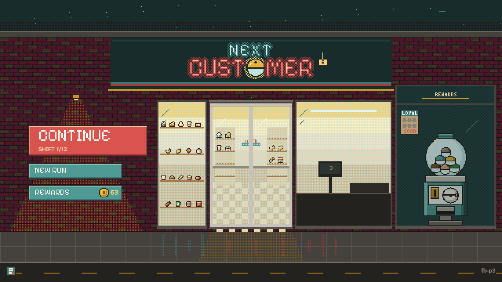
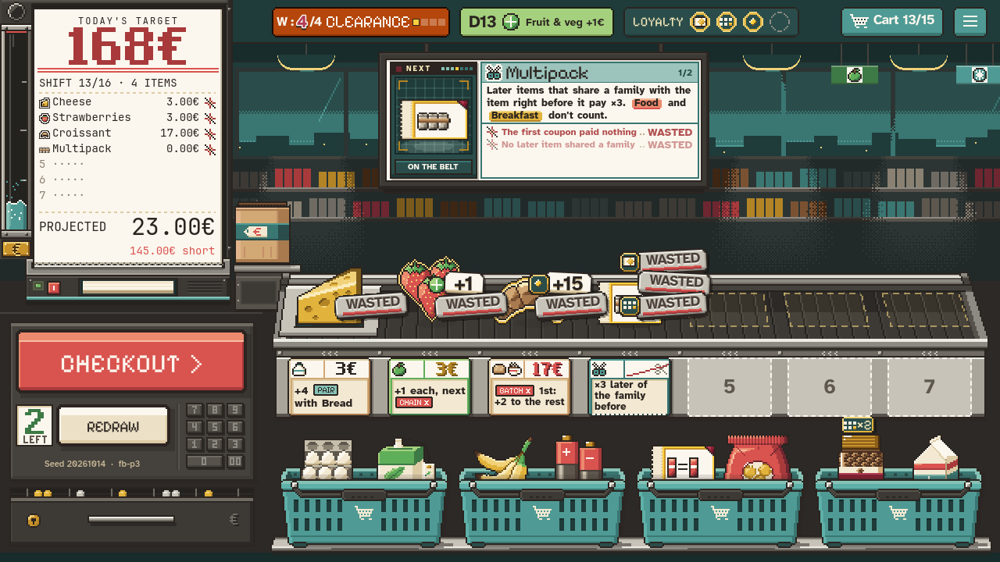

Options and pause
Your request: Options reachable from the title and during a shift, starting with Fullscreen / Windowed, music and sound volume, text size and reduced motion, and a pause menu with Resume and Save & Quit to Title. The stage below is the game's 1280x720 stage with the real title and a real shift 13 capture. Everything on it is clickable, and the settings work: the music and sound sliders play the game's own shift.ogg and scan.wav, FULLSCREEN puts the stage in your browser's full screen (the web build's own case), and REDUCED MOTION stills this page.
Keys on the stage: Esc or P pause and resume, Up Down Enter in the menus. The ☰ button at the top right of the shift opens the pause too. How to Play is only an entry here: another mock-up designs it.
No options screen, no pause, and the save is already there

12
345PLATE_TOPS 0 / 96 / 152 / 208). There is no Options entry.TopBar.menu). A popup with Export log; PR #143 adds Guide above it. It doesn't pause anything, and there's no way back to the title from a shift.ProfileState.settings in profile.json holds count_up_speed and reduced_motion, which only the debug panel sets (it's excluded from playtest exports). Volumes are fixed in default_bus_layout.tres (Music −15 dB, SFX −6 dB). The window is 1280x720 with canvas_items / expand, so fullscreen is only possible from the OS. Text sizes are constants (the scan popup's rule text is 15 px, its lines 13 px).RunSave writes at every wait: PLANNING (after every place, remove and redraw), MACHINE_CHOOSE (at the CHECKOUT click), MACHINE_PICK and SCORED, plus the start board after every commitment. Closing the window loses nothing, and CONTINUE resumes through _resume_run. A resume never replays a count-up. Only run_resume is logged.Pick a direction, then walk the flow
Pause: a tomato LANE CLOSED sign swings down over the belt, the store dims and freezes, and the title's own menu plates step in on the left: RESUME, OPTIONS, HOW TO PLAY, SAVE & QUIT. Options: one paper card, the same over the title and over the pause.
Pause: a clipboard slides up from the counter with tabs PAUSED / OPTIONS / HOW TO PLAY. Each entry is a checklist line. Options is a page flip on the same board, and the title opens it on its OPTIONS tab.
Pause: the camera pushes in on the shop monitor, which switches to a green-LED SERVICE MODE with numbered entries (1–4). Options are LED lines on the same screen. It's very much in the world, but the screen has a fixed size, so large text clips.
Scale the reading text, never the art
The stage is drawn at 1280x720 and Godot stretches it (canvas_items), so at 1920x1080 everything is already ×1.5. A 15 px rule line is 15 screen px in a 1280x720 window and 22.5 px in 1080p fullscreen. Small windows need the setting most. TEXT SIZE multiplies the font size of reading text (Atkinson body and the mono receipt lines) by 1.0 / 1.2 / 1.4 and leaves the pixel art, the chunky-caps headings, the stickers and the ticket prices alone. Those are drawn on the 2 px grid and fit fixed boxes. A panel with reading text grows to fit: the monitor's popup lets its paper run down past the bezel instead of clipping.
This is the shop monitor cropped from the real capture, at true size for the chosen resolution: one CSS pixel is one screen pixel at 100% zoom. The scan popup is redrawn in HTML at the chosen text size.
| Scales with TEXT SIZE | Stays (pixel grid / fixed boxes) |
|---|---|
| Scan popup rule and lines (15 / 13 / 12 px), glyph tips, the handbook's entries, the receipt's item lines (mono), the time card and day slip body, Options and pause sub-lines, results / final receipt lines | Item sprites, price-ticket numbers and effect text on tickets, stickers (+1, ×3, WASTED), chunky-caps headings, the monitor's big total, menu plate labels, top-bar chips |
A · Lane closed. The pause reads at once as "this checkout is stopped", which suits a cashier game, and it costs little: the sign is one new sprite, and the plates are the title's MenuPlate and TitleMenu stepping in, so title and pause feel like one menu. Options is one plain paper card shared by both places. It has room for six rows and grows with text size, which C can't do. B is a fine fallback, but its board hides the run, while A keeps the dimmed belt visible behind the sign, so the player remembers where they are.
Save & Quit needs no confirmation. The run is always saved at the last wait, so the button never loses anything. The sign flips to SAVED for a beat, the doors close, and the title opens lit with CONTINUE showing the shift and week. CONTINUE opens the doors onto the same state, with a short WELCOME BACK slip.
| Piece | What the build changes |
|---|---|
| Opening the pause | In a shift, Esc first closes the topmost thing as today (a drag, the picker, a popup, the day slip). When nothing is open, Esc opens the pause. P and the ☰ button open it too: the ☰ popup is replaced by the pause, and Export log moves into the pause as a small link. In the pause, Esc / P / RESUME close it. It can't open on the results, during the cart reveal's first 0.3 s, or while a doors transition plays. |
| What pauses | A new PauseMenu (ui/pause/, process_mode = ALWAYS) sets get_tree().paused. Count-up tweens, hit-stops, the machine's plan time, the belt, standees and timers all freeze, and the music ducks with the existing Music.duck. Played time (run_ms) excludes paused time. Resume continues the animation where it stopped (reduced motion: it was already still). |
| Pause menu | RESUME (primary, tomato, with a sub-line saying where you are), OPTIONS, HOW TO PLAY (the handbook from PR #143, opened over the pause), SAVE & QUIT (its sub-line says where you'll resume). The plates use MenuPlate with Up / Down / Enter, like TitleMenu.handle_key. The LANE CLOSED sign is one sprite (art/src/ui/lane_closed.txt) dropping over 0.5 s with a 2-swing settle; it's still under reduced motion. |
| Save & Quit | No new save point and no confirmation. The run is already saved at its last wait (planning: the last place / remove / redraw; count-up or dessert: the CHECKOUT click as MACHINE_CHOOSE, so it resumes at the machine with the checkout's end state and no replay; machine pick: MACHINE_PICK with the same prizes; start board: the last commitment). An in-flight drag snaps back first. The sign flips to SAVED (stamp sound), the doors close, and TitleScreen.request_lit() then the title opens. |
| Resume | Unchanged _resume_run. New: a paper slip "WELCOME BACK · SHIFT n/16 · as you left it" under the top bar for 1.8 s (still under reduced motion). It doesn't show on the first start of a run. |
| Title | A new OPTIONS entry in TitleMenu.Entry. Recommended: GUIDE and OPTIONS as two half plates on the last shelf (y 208), so the column keeps its height. OPTIONS opens the same card over the dimmed storefront. Esc closes it, and BACK / DONE return to the plates. |
| Options card | OptionsCard (ui/options/), one scene used by the title and the pause. Changes apply live: the display mode switches at once, volume sliders play a scan beep (sound) or change the playing loop (music), and the text size reflows the card's own preview. DONE or Esc saves the profile once. |
| Display | WINDOWED / FULLSCREEN through DisplayServer.window_set_mode (FULLSCREEN = borderless, not exclusive). Alt+Enter toggles it anywhere (it's the same setting). Applied at boot from the profile, before the title opens. Web: the button calls the browser's fullscreen (allowed because it's a click). Saved FULLSCREEN is not applied at boot, because browsers refuse without a click. When the browser leaves fullscreen (its own Esc), the card's switch follows and that Esc doesn't open the pause, so P and ☰ are the reliable keys on the web. |
| Volumes | MUSIC and SOUND, 0–10 (default 8), stored as ints. Applied as linear_to_db(v / 10) on top of the bus layout's levels. The music offset goes into Music's base level, so ducking still works relative to it. At 0 the bus is muted. |
| Text size | NORMAL / LARGE / LARGER = ×1.0 / 1.2 / 1.4 on reading text only (table above). It's read through one helper (UiKit.text_size(base)), so screens built after a change pick it up, and an Options change rebuilds open panels' fonts. Panels with reading text grow; nothing clips. UI tests check the scan popup and the time card at LARGER at 1280x720. |
| Reduced motion | The existing ProfileState.reduced_motion, now reachable. Description: "No shakes, no flying chips, no rolling numbers. Every result stays." The debug panel's toggle stays. |
| Save data | profile.json → settings (JSON values, accessors tolerate missing or wrong types, so no FORMAT_VERSION bump): display ("windowed" | "fullscreen"), music_volume, sound_volume (int 0–10), text_size ("normal" | "large" | "larger"), plus the existing reduced_motion and count_up_speed. The run save is unchanged. Settings never touch a run. |
| Telemetry | settings_change {key, from, to} once per changed key when the card closes. pause_open / pause_close {phase, shift, paused_ms}. run_quit {phase, shift} on Save & Quit (the next run_resume pairs with it). tools/log_summary.py adds a settings line per player (final values, number of pauses). |
| Changelog | Playtest-facing: a plan changelog row (pause, options, settings keys, text-size reach). |
Questions (my default answers in bold)
- On the title, where does OPTIONS go? GUIDE | OPTIONS as two half plates on the last shelf (alternatives: a fifth full plate, or a small gear by Export log).
- Should Options also show COUNT-UP SPEED (Normal / Fast)? It's already in the profile but only the debug panel sets it. Yes, as a sixth row (the dashed row on the card).
- Text size: three steps (×1.0 / 1.2 / 1.4), reading text only, panels grow. Or should the stickers and ticket text scale too? That would mean a second, larger pixel font size.
- Pausing during the count-up: freeze it, and Save & Quit resumes at the machine with the checkout's end state. The alternative is to let the count finish before the pause opens.